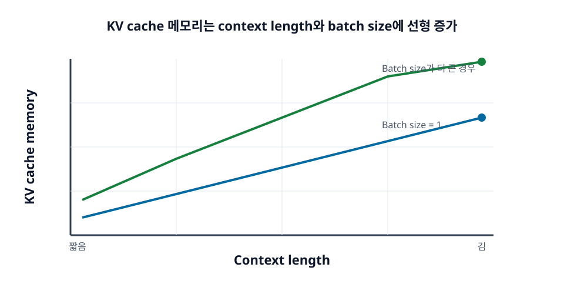

5장. KV Cache¶
KV cache는 LLM 추론 시스템을 이해할 때 반드시 넘어야 하는 개념이다. 처음에는 이름이 낯설지만, 역할은 명확하다. 이전 token들의 attention용 Key와 Value를 저장해 두고, 다음 token을 만들 때 다시 사용한다.
KV cache 덕분에 decode는 매번 과거 token 전체를 다시 계산하지 않아도 된다. 하지만 동시에 KV cache는 요청마다 커지는 메모리 상태이기도 하다. Long-context, batch size, 동시 사용자, OOM 문제는 대부분 KV cache와 연결된다.

학습 목표¶
- KV cache가 필요한 이유를 이해한다.
- Context length와 batch size가 KV cache 크기에 미치는 영향을 설명한다.
- Model config에서
num_key_value_heads를 확인해야 하는 이유를 이해한다. - RAG, 동시 사용자, prefix caching 문제를 KV cache 관점에서 해석한다.
- KV cache가 왜 HBM, CPU RAM, SSD를 함께 보는 메모리 계층 문제로 확장되는지 이해한다.
5.1 KV cache가 필요한 이유¶
Self-attention은 현재 token이 과거 token들을 참조하는 구조다. Decode에서 새 token을 하나 만들 때마다 과거 context의 Key와 Value가 필요하다. 이 값을 매번 다시 계산하면 매우 비효율적이므로, 한 번 계산한 Key와 Value를 저장해 둔다. 이것이 KV cache다.
5.1.1 이전 token을 매번 다시 계산하지 않기 위한 장치¶
Prompt가 4,000 token이고 output을 500 token 생성한다고 생각해 보자. KV cache가 없다면 output token을 하나 만들 때마다 prompt와 이전 output token들을 다시 모델에 통과시켜야 한다. 생성이 진행될수록 다시 계산할 token이 늘어나므로 비용이 폭발한다.
KV cache를 사용하면 prefill 단계에서 prompt의 Key와 Value를 저장해 두고, decode 단계에서는 새 token의 Key와 Value만 추가한다. 과거 token의 표현을 재사용하므로 decode가 훨씬 효율적이다.
5.1.2 Layer마다 key와 value를 저장한다¶
KV cache는 한 곳에만 저장되는 단순한 배열이 아니다. Transformer의 각 layer마다 attention에 필요한 Key와 Value가 있다. 따라서 layer 수가 많을수록 저장해야 할 KV cache도 많아진다.
대략적인 크기는 다음 요인에 비례한다.
- batch size
- sequence length
- layer 수
- KV head 수와 head dimension
- precision
이 공식은 부록 B에서 더 자세히 다룬다. 여기서는 context length와 batch size가 커지면 KV cache가 선형으로 증가한다는 감각이 중요하다.
주의할 점은 KV head 수가 항상 attention head 수와 같지는 않다는 것이다. 예전의 Multi-Head Attention(MHA) 구조에서는 보통 query head 수와 KV head 수가 같았다. 하지만 최근 모델은 Multi-Query Attention(MQA)이나 Grouped-Query Attention(GQA)을 많이 사용한다. 이 경우 여러 query head가 더 적은 수의 Key/Value head를 공유하므로 KV cache 크기가 크게 줄어든다.
따라서 실제 모델의 KV cache를 추정할 때는 num_attention_heads만 보면 안 된다. 모델 설정 파일이나 model card에서 num_key_value_heads에 해당하는 값을 확인해야 한다. 입문자가 가장 자주 하는 실수는 "attention head가 64개이니 KV head도 64개일 것"이라고 가정하는 것이다.
5.1.3 Decode 속도는 KV cache 접근 효율에 크게 좌우된다¶
Decode 단계에서는 매 token마다 KV cache를 읽는다. Context가 짧을 때는 문제가 작지만, context가 길어지면 읽어야 할 KV cache가 많아진다. 이때 GPU의 계산 성능보다 메모리 접근 효율이 더 중요한 병목이 될 수 있다.
PagedAttention, KV cache quantization, cache block 관리, context parallelism 같은 기법들은 모두 KV cache를 더 효율적으로 다루기 위한 시도다.
5.2 KV cache 메모리 감각 잡기¶
KV cache는 "요청별로 커지는 메모리"다. Model weights는 서버가 시작될 때 올라가고 여러 요청이 공유하지만, KV cache는 실행 중인 sequence마다 필요하다. 그래서 동시 요청이 많아질수록 GPU 메모리를 빠르게 소모한다.
5.2.1 Context length가 길면 KV cache가 선형 증가한다¶
Context length가 2배가 되면 저장해야 하는 token별 Key와 Value도 대체로 2배가 된다. 8K context보다 32K context가 더 많은 메모리를 쓰는 이유는 단순하다. 저장해야 할 token 상태가 4배이기 때문이다.
Long-context 모델을 사용할 때 가장 먼저 확인할 것은 실제 요청의 평균 context length와 최대 context length다. 최대값만 크게 열어 두면 드문 긴 요청 하나가 많은 메모리를 차지할 수 있다.
5.2.2 Batch size가 커져도 KV cache가 선형 증가한다¶
Batch size는 동시에 처리하는 sequence 수다. 각 sequence마다 KV cache가 필요하므로 batch size가 2배가 되면 KV cache도 대체로 2배가 된다. Throughput을 높이기 위해 batch를 키우면 GPU 활용률은 좋아질 수 있지만, KV cache 메모리도 함께 늘어난다.
이 때문에 serving 엔진은 보통 "요청 개수"만이 아니라 "총 token 수"를 기준으로 scheduling한다. 짧은 요청 16개와 긴 요청 16개는 같은 batch size라도 메모리 부담이 다르다.
5.2.3 Layer 수와 hidden size도 KV cache 크기에 영향을 준다¶
모델이 클수록 layer 수와 hidden dimension이 커지는 경향이 있다. 특히 KV head 수와 head dimension은 KV cache 크기에 직접 영향을 준다. GQA나 MQA처럼 KV head 수를 줄이는 attention 구조는 KV cache 메모리를 줄이는 데 도움이 된다.
따라서 "7B 모델은 되고 70B 모델은 왜 안 되는가"라는 질문에는 weight 메모리뿐 아니라 KV cache 크기도 포함해서 답해야 한다. 큰 모델은 weight도 크고, cache 관련 구조도 더 무거울 수 있다.
5.2.4 KV cache는 선형으로 커지지만 attention 비용은 따로 봐야 한다¶
긴 context를 이야기할 때 "attention은 sequence length에 대해 제곱으로 비싸다"는 말을 자주 듣는다. 이 말은 prefill이나 full attention 계산, 특히 attention score matrix 관점에서는 중요한 직관이다. 하지만 GPU에 오래 남아 있는 KV cache 저장 공간 자체는 cached token 수에 대체로 선형으로 비례한다.
즉 두 가지를 구분해야 한다.
- Prefill 계산: prompt 안의 token들이 서로 attention하므로 긴 sequence에서 계산과 중간 메모리 부담이 빠르게 커진다.
- KV cache 저장: 각 token마다 layer별 Key와 Value를 저장하므로 cached token 수, active sequence 수, KV head 수에 선형으로 커진다.
- Decode 읽기 비용: 새 token 하나를 만들 때 기존 context의 KV cache를 읽으므로 context가 길수록 token당 읽을 데이터가 늘어난다.
FlashAttention 계열 kernel은 attention 계산 중 중간 행렬과 HBM 접근을 줄이는 데 효과적이다. 하지만 이미 저장해야 하는 KV cache 자체를 없애지는 않는다. 그래서 long-context serving에서는 attention kernel 최적화와 KV cache 예산 관리를 함께 봐야 한다.
5.3 KV cache를 줄이는 attention 구조¶
KV cache를 줄이는 방법은 serving engine의 memory manager만으로 끝나지 않는다. 모델의 attention 구조 자체가 cache 크기를 크게 바꾼다. 입문 단계에서는 세부 수식보다 "무엇을 공유하거나 압축해서 Key/Value 저장량을 줄이는가"를 이해하면 충분하다.
5.3.1 MQA는 모든 query head가 하나의 KV head를 공유한다¶
Multi-Query Attention(MQA)은 여러 query head가 하나의 Key head와 하나의 Value head를 공유하는 구조다. Query는 여러 head로 유지하지만, cache에 저장하는 Key/Value head 수를 크게 줄인다. 그래서 decode에서 읽어야 할 KV cache와 memory bandwidth 부담이 줄어든다.
대신 모든 상황에서 품질 손실이 없다고 볼 수는 없다. 여러 독립적인 Key/Value 관점을 줄이는 구조이므로 모델 크기, 학습 방식, workload에 따라 trade-off가 생길 수 있다.
5.3.2 GQA는 MHA와 MQA 사이의 절충이다¶
Grouped-Query Attention(GQA)은 query head를 여러 그룹으로 나누고, 각 그룹이 하나의 Key/Value head를 공유한다. 예를 들어 query head가 64개이고 KV head가 8개라면, 8개 그룹이 각각 Key/Value를 공유하는 식이다.
실무에서는 GQA가 자주 쓰인다. MQA처럼 cache를 크게 줄이면서도 MHA에 가까운 품질을 유지하기 쉬운 절충점이기 때문이다. 따라서 최신 모델을 self-hosting할 때는 "이 모델이 MHA인가, GQA인가, KV head가 몇 개인가"를 먼저 확인하는 습관이 필요하다.
5.3.3 MLA와 sliding window는 long-context 비용을 다른 방식으로 줄인다¶
Multi-Head Latent Attention(MLA)은 Key와 Value를 그대로 모두 저장하는 대신 압축된 latent 표현을 cache하는 방향의 구조다. DeepSeek 계열 모델에서 알려진 방식이며, 일반적인 GQA보다 더 구조적인 변경이 필요하다. 입문자는 "KV cache를 full tensor 그대로 저장하지 않고 더 작은 표현으로 바꾸는 접근" 정도로 이해하면 된다.
Sliding Window Attention(SWA)은 모든 과거 token을 항상 보지 않고 최근 일정 window만 보게 하는 방식이다. 이 경우 local attention layer의 cache는 window 크기에 묶일 수 있다. 다만 모든 layer가 local window만 쓰는 것이 아니라 global attention layer가 섞인 hybrid 구조라면, 일부 cache는 여전히 전체 context 길이에 따라 커질 수 있다.
정리하면 KV cache 절감 기법은 크게 네 방향으로 볼 수 있다.
- MQA: KV head를 1개로 강하게 공유한다.
- GQA: KV head를 몇 개 그룹으로 공유한다.
- MLA: Key/Value를 압축된 표현으로 저장한다.
- SWA 또는 local attention: 오래된 token을 모든 layer에서 계속 보지 않도록 한다.
이 내용은 Melchi의 KV cache 글에서도 좋은 입문 예시와 계산으로 설명되어 있다. 특히 실제 모델을 볼 때 num_key_value_heads를 확인하라는 조언은 self-hosting 메모리 예산을 잡을 때 중요하다.
5.4 KV cache와 개발자 실무¶
KV cache는 추상적인 엔진 내부 구현이 아니라, 개발자가 매일 겪는 성능 문제와 직접 연결된다.
5.4.1 왜 긴 RAG prompt가 느려지는가¶
RAG에서는 검색된 문서를 prompt에 넣는다. 문서를 많이 넣으면 prompt token 수가 늘고, prefill에서 처리해야 할 token도 늘어난다. 동시에 이 token들의 Key와 Value가 KV cache로 저장된다.
따라서 긴 RAG prompt는 두 가지 비용을 만든다. 첫째, prefill이 느려져 TTFT가 증가한다. 둘째, KV cache가 커져 동시 처리 가능한 요청 수가 줄어든다. 검색 품질이 낮아 관련 없는 문서를 많이 넣는다면 비용만 늘고 답변 품질은 크게 좋아지지 않을 수 있다.
5.4.2 왜 동시 사용자가 많으면 OOM이 나는가¶
서버 시작 시 모델이 GPU에 잘 올라갔다고 해서 운영 중 OOM이 나지 않는 것은 아니다. 요청이 들어오면 각 요청의 KV cache가 GPU 메모리에 추가된다. 동시 사용자가 많거나, 각 사용자의 context가 길거나, output을 길게 생성하면 KV cache가 빠르게 커진다.
OOM이 발생했을 때는 다음을 확인한다.
- 모델 weight가 GPU 메모리 대부분을 차지하고 있는가?
- max model length가 너무 크게 설정되어 있는가?
- 동시에 처리되는 총 token 수가 너무 큰가?
- 긴 요청과 짧은 요청이 같은 worker에서 섞이고 있는가?
- 모델 설정의 KV head 수를 실제보다 크게 가정하고 있지는 않은가?
5.4.3 왜 prefix caching이 중요한가¶
많은 LLM 서비스에서는 같은 prefix가 반복된다. System prompt, RAG template, agent instruction, multi-turn chat의 앞부분이 대표적이다. 같은 prefix를 매번 prefill하면 같은 계산을 반복하게 된다.
Prefix caching은 동일한 token prefix의 KV cache를 재사용하는 기법이다. 잘 적용되면 반복 prefill 계산을 줄이고 TTFT를 낮출 수 있다. 특히 agent workflow처럼 고정 instruction과 tool schema가 반복되는 workload에서 효과가 크다.
다만 prefix caching은 텍스트가 비슷하다고 자동으로 되는 것이 아니다. Token sequence가 동일해야 cache를 안전하게 재사용할 수 있다. 공백, template 차이, system prompt 버전 차이가 cache hit rate에 영향을 줄 수 있다.
5.5 KV cache를 메모리 계층으로 보기¶
초기에는 KV cache를 "GPU 메모리 안에 있는 임시 배열" 정도로 이해해도 충분하다. 하지만 long-context, multi-turn chat, agent workflow, 많은 동시 요청을 다루기 시작하면 이 설명은 부족해진다. KV cache가 너무 커져 GPU HBM에 모두 올려 두기 어렵고, 재사용 가능한 cache를 매번 버렸다가 다시 계산하는 것도 비용이 크기 때문이다.
최근 serving 시스템은 KV cache를 하나의 메모리 계층 문제로 다루기 시작했다. 자주 쓰이고 지금 decode에 필요한 cache는 GPU HBM에 두고, 당장 필요하지 않지만 다시 쓸 가능성이 있는 cache는 CPU RAM, local SSD, remote storage 같은 더 큰 계층으로 옮기는 방식이다.
GPU HBM -> CPU RAM -> local SSD/NVMe -> remote storage
이 관점에서 KV cache 관리는 단순히 "저장할 공간을 늘리는 일"이 아니다. 어떤 cache를 HBM에 남길지, 어떤 cache를 느린 계층으로 내릴지, 다시 필요해지기 전에 미리 가져올 수 있는지, 그리고 이동 비용이 재계산 비용보다 싼지를 판단하는 문제다.
5.5.1 HBM은 빠르지만 작다¶
GPU HBM은 decode에 필요한 KV cache를 읽기에 가장 빠른 위치다. 하지만 용량은 제한적이다. 모델 weight, activation, temporary buffer와 함께 KV cache도 HBM을 사용하므로, context가 길거나 동시 요청이 많으면 HBM이 먼저 병목이 된다.
이때 모든 KV cache를 HBM에만 유지하려고 하면 batch size를 줄이거나 요청을 거절해야 할 수 있다. 반대로 cache를 너무 빨리 버리면 같은 prefix나 긴 문서를 다시 prefill해야 하므로 TTFT와 비용이 증가한다.
5.5.2 느린 계층은 용량을 주지만 지연을 만든다¶
CPU RAM, local SSD, remote storage는 HBM보다 크고 저렴하다. 그래서 덜 뜨거운 KV cache를 보관하는 계층으로 사용할 수 있다. LMCache, Dynamo 같은 시스템은 이런 계층을 활용해 KV cache를 저장, 재사용, 전송하는 방향으로 발전하고 있다.
하지만 느린 계층을 붙인다고 항상 성능이 좋아지는 것은 아니다. Cache가 HBM 안에 충분히 들어가고 재사용도 많지 않다면 offload는 오히려 불필요한 데이터 이동을 만든다. 반대로 긴 system prompt, 긴 문서, 반복되는 agent instruction처럼 큰 cache가 반복해서 재사용되는 workload에서는 계층형 cache가 prefill 재계산을 줄일 수 있다.
5.5.3 핵심은 재계산 비용과 이동 비용의 비교다¶
KV cache offload를 이해하는 가장 쉬운 기준은 다음 질문이다.
- 이 cache를 다시 계산하는 비용이 큰가?
- 이 cache가 다시 사용될 가능성이 높은가?
- 느린 계층에서 가져오는 시간이 재계산보다 짧은가?
- 가져오는 동안 GPU 계산과 데이터 이동을 겹칠 수 있는가?
이 질문에 대한 답이 "그렇다"에 가까울수록 cache를 계층적으로 관리할 가치가 커진다. 입문 단계에서는 KV cache를 단순한 내부 최적화가 아니라, long-context serving의 메모리 예산과 비용 구조를 결정하는 핵심 상태로 이해하면 충분하다.
정리¶
KV cache는 decode에서 과거 token을 다시 계산하지 않게 해 주는 핵심 장치다. 하지만 요청마다 커지는 동적 메모리이므로 long-context, batch size, 동시 사용자 증가와 함께 GPU 메모리 병목을 만든다.
개발자는 prompt token 수, context length, batch size를 KV cache 관점에서 볼 수 있어야 한다. 또한 실제 모델 설정에서 KV head 수, attention 구조, KV cache precision을 확인해야 한다. RAG prompt가 길어질 때, 동시 요청에서 OOM이 날 때, prefix caching이나 cache offload를 적용할 때 모두 KV cache가 중심에 있다.
점검 질문¶
- KV cache가 없다면 decode에서 어떤 계산을 반복하게 되는가?
num_attention_heads와num_key_value_heads를 구분해야 하는 이유는 무엇인가?- OOM이 model weight 때문인지 KV cache 때문인지 어떻게 의심해 볼 수 있는가?
- KV cache offload가 항상 성능을 높이지는 않는 이유는 무엇인가?
다음 장으로¶
다음 장에서는 attention 최적화를 다룬다. FlashAttention은 attention 계산 중 메모리 접근을 줄이고, PagedAttention은 KV cache를 serving 환경에서 효율적으로 관리한다.